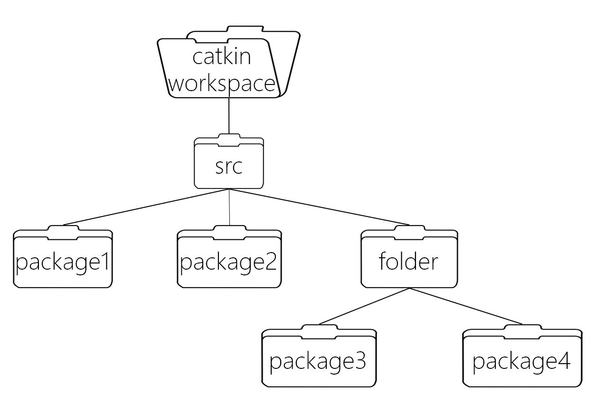

Catkin工作空间
Catkin工作空间是创建、修改、编译catkin软件包的文件夹。catkin的工作空间，直观的形容就是一个仓库，里面装载着ROS的各种项目工程，便于系统组织管理调用。在可视化图形界面里是一个文件夹。我们自己写的ROS代码通常就放在工作空间中。
本篇就来介绍catkin工作空间的结构。
一、创建初始工作空间
介绍完catkin编译系统，我们来建立一个catkin的初始工作空间。首先我们要在计算机上创建一个初始的catkin_ws/src，这也是catkin工作空间结构的最高层级。输入下列指令，完成初始创建。
mkdir -p ~/catkin_ws/src
cd ~/catkin_ws/
catkin_make #初始化工作空间
第一行代码直接创建了文件夹catkin_ws文件夹和src子文件夹，这也是我们放ROS软件包的地方。第二行代码进入工作空间catkin_ws，然后再是catkin_make。
注：
- catkin_make命令必须在工作空间这个路径上执行
- 原先的初始化命令catkin_init_workspace仍然保留
二、工作空间结构
catkin的结构十分清晰，具体的catkin工作空间结构图如下。初看起来catkin工作空间看起来极其复杂，其实不然，catkin工作空间的结构其实非常清晰。
为了更形象的显示目录文件结构，这里我们需要先下载安装一个tree工具：
sudo apt install tree
然后在工作空间下用tree命令，显示文件结构。
cd ~/catkin_ws
tree
结果类似于：
─ build
│ ├── catkin
│ │ └── catkin_generated
│ │ └── version
│ │ └── package.cmake
│ ├──
......
│ ├── catkin_make.cache
│ ├── CMakeCache.txt
│ ├── CMakeFiles
│ │ ├──
......
├── devel
│ ├── env.sh
│ ├── lib
│ ├── setup.bash
│ ├── setup.sh
│ ├── _setup_util.py
│ └── setup.zsh
└── src
└── CMakeLists.txt -> /opt/ros/kinetic/share/catkin/cmake/toplevel.cmake
通过tree命令可以看到catkin工作空间的结构,它包括了src、build、devel三个文件路径，在有些编译选项下也可能包括其他。但这三个文件夹是catkin编译系统默认的。它们的具体作用如下：
- src/: ROS的catkin软件包(源代码包)；自己手动创建;
- build/: catkin(CMake)的缓存信息和中间文件；自动生成;
- devel/: 用于存放生成的目标文件(包括头文件，动态链接库，静态链接库，可执行文件等)、环境变量(setup.bash等)；自动生成;
在编译过程中，它们的工作流程如图：
 后两个路径由catkin系统自动生成、管理，我们日常的开发一般不会去涉及。而主要用到的是src文件夹，我们写的ROS程序、网上下载的ROS源代码包都存放在这里。
后两个路径由catkin系统自动生成、管理，我们日常的开发一般不会去涉及。而主要用到的是src文件夹，我们写的ROS程序、网上下载的ROS源代码包都存放在这里。
在编译时，catkin编译系统会递归的查找和编译src/下的每一个源代码包。因此你也可以把几个源代码包放到同一个文件夹下，如下图所示：

小结
catkin工作空间基本就是以上的结构，package是catkin工作空间的基本单元，我们在ROS开发时，写好代码，然后catkin_make，系统就会完成所有编译构建的工作。至于更详细的package内容，我们将在下一篇继续介绍。